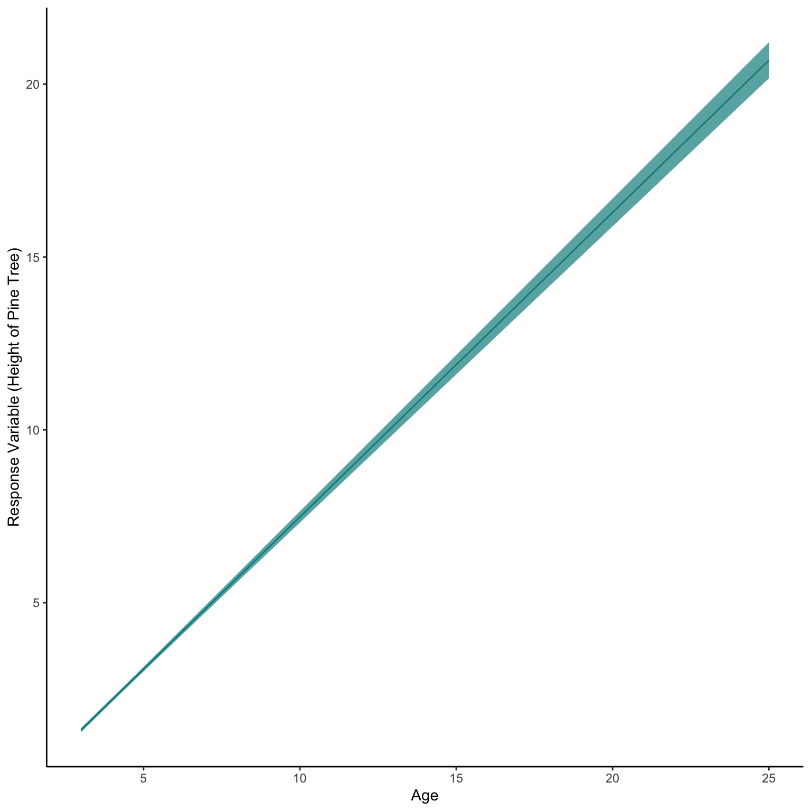

Lets use the real-world dataset Loblolly Pine trees, which contains the Height of Pine trees (in feet) over Ages (in years) for different individuals (Seeds).
This will be quite a simple example assessing change with age of pine trees. Here we will not be telling the model that are data are repeat measures. This means our data are not independent. To take this into consideration we could use a General Linear Mixed Effects Model with Seed as a random factor. However, for this example we shall pretend that there isn’t this structure in our data.
library(tidyverse)
── Attaching core tidyverse packages ──────────────────────── tidyverse 2.0.0 ──
✔ dplyr 1.1.4 ✔ readr 2.1.4
✔ forcats 1.0.0 ✔ stringr 1.5.1
✔ ggplot2 3.4.4 ✔ tibble 3.2.1
✔ lubridate 1.9.3 ✔ tidyr 1.3.1
✔ purrr 1.0.2
── Conflicts ────────────────────────────────────────── tidyverse_conflicts() ──
✖ dplyr::filter() masks stats::filter()
✖ dplyr::lag() masks stats::lag()
ℹ Use the conflicted package (<http://conflicted.r-lib.org/>) to force all conflicts to become errors
As we mentioned above we are simplifying this example into the change in Height of Pine trees with age.
This is a very simple model with just one fixed effect and can be written as:
Height of Pine Tree ~ Age
Step Two - Resonse Variable Distribution
The height of the tree must be positive and is continuous, therefore we should technically use a Gamma Model. Again as with most Gamma examples we could use a Gaussian distribution, which is simpler mathematically, but when using a Gaussian model on a transformed response variable we will get incorrect estimates of effects meaning our inference will be incorrect.
Step Three - Organising Fixed Effects
As a fully experimental data set we actually have the same count of each age category: 3, 5, 10, 15, 20, 25. This means we should be able to use the raw fixed effect value with little issue.
As we are scientists so should use logical units we shall convert our height column to metres before modelling. We can do this by multiplying our feet by 0.3048.
We see some fairly mixed results here. We can see out Homogeneity of Variance isn’t flat and horizontal, but there are no clear patterns at high or low fitted values. The only pattern we do see is vertical banding, this is because we have actually got repeat measurements of the same trees over time. We shall ignore this for this example but we really should have run a GLMM to take into account all the hierarchy of the data.
summary(glm1)
Call:
glm(formula = Height ~ age, family = Gamma(link = "identity"),
data = df)
Coefficients:
Estimate Std. Error t value Pr(>|t|)
(Intercept) -1.32432 0.05556 -23.84 <2e-16 ***
age 0.88058 0.01246 70.68 <2e-16 ***
---
Signif. codes: 0 '***' 0.001 '**' 0.01 '*' 0.05 '.' 0.1 ' ' 1
(Dispersion parameter for Gamma family taken to be 0.008982799)
Null deviance: 57.46161 on 83 degrees of freedom
Residual deviance: 0.73641 on 82 degrees of freedom
AIC: 173.7
Number of Fisher Scoring iterations: 3
Lets write out the equation for the model, then we can use the values from the summary to create an equation for the model (the predict function will do this for us).
If we wanted to we could write out our model as this:
\[Height \;of \;Pine \;Tree = Gamma(y',\alpha)\]
\[y'=y\]
\[
\begin{aligned}
y = \beta_{1} Age + Intercept
\end{aligned}
\]
As the Gamma distribution requires two shape parameters (\(y'\) and \(\alpha\)), where \(y'\) must be above zero, we must convert out linear equation results (\(y\)) so that it is positive. This means we use the link function, which for Gamma models is by default a inverse. We can use a different link function if we want, and here we did, we used the identity link function. The identity function does nothing: it just uses the raw data, this is simpler mathematically and computationally but may be the incorrect decision depending on the situation.
glm1$family$link
[1] "identity"
When we plot the estimates into this equation, this should be similar to our raw data but not identical. Remember we are creating a model to Generalise the patterns of the raw data, not copy them!
Step Five - Model Interpretation
As always we then use the model to predict() the response variable based on those predictor variables.
Therefore, we make a data set with just age, the same as our original data (be careful of spelling and capitalisation, R wants it identical).
The model then predicts the average Height of Pine Tree based on those ages.
We can also tell the predict function to predict error (Standard Error here that we then convert to an approximation of the 95% confidence interval).
NewData_1<-data.frame(age=seq(min(df$age),max(df$age),length.out=50))Pred<-predict(glm1,NewData_1,se.fit=TRUE,type="response")NewData<-NewData_1 %>%mutate(response=Pred$fit,se.fit=Pred$se.fit,Upr=response+(se.fit*1.96),Lwr=response-(se.fit*1.96))ggplot(NewData)+geom_ribbon(aes(x=age,ymax=Upr,ymin=Lwr),alpha=0.7,fill="darkcyan")+geom_line(aes(x=age,y=response),colour="darkcyan")+labs(x="Age",y="Response Variable (Height of Pine Tree)")+theme_classic()

Now lets plot this model output over the raw values to see how well the model has worked.
ggplot(NewData)+geom_point(data=df,aes(x=age,y=Height),alpha=0.3,size=0.8,colour="darkcyan")+geom_ribbon(aes(x=age,ymax=Upr,ymin=Lwr),alpha=0.7,fill="darkcyan")+geom_line(aes(x=age,y=response),colour="darkcyan")+labs(x="Age",y="Response Variable (Height of Pine Tree)")+theme_classic()
Some Caveats
Now this looks quite good. But we have been honest about making sure we model the full hierarchy of our data set, which we did not do here! However, we can see the model got generally the correct pattern with an almost 1:1 relationship with meters and years. We could have seen that from the summary table, where the estimate for age was 0.881 while the estimate for the intercept was -1.324. Fed into our equation that gives use a line of Height = 0.881 * Age + -1.324.
Data Loading Complex - Chicks
This dataset is an experimental dataset where weights (g) of chicks were measured from birth until day 21 (Time) based on 4 different dietary regimes. Again as above there is correlation element of each chick being correlated with its previous weight but again as above we will ignore this issue. This type of hierarchy or repeat measurement is highly important and as researchers faced with this structure of data we should really use a GLMM (sometimes called hierarchy model or multilevel model). This should be fine for our example but again: always model the structure you know or understand about your data.
data("ChickWeight")summary(ChickWeight)
weight Time Chick Diet
Min. : 35.0 Min. : 0.00 13 : 12 1:220
1st Qu.: 63.0 1st Qu.: 4.00 9 : 12 2:120
Median :103.0 Median :10.00 20 : 12 3:120
Mean :121.8 Mean :10.72 10 : 12 4:118
3rd Qu.:163.8 3rd Qu.:16.00 17 : 12
Max. :373.0 Max. :21.00 19 : 12
(Other):506
Step One - Scienctific Model to Stats Model
We will assess the Weight over time of Chicks depending on different diet types. We will assess if the change in weight over time is different across the different diets.
This is a bit more complex model with two interacting fixed effect, and can be written as:
Chick Weight ~ Age*Diet
Step Two - Resonse Variable Distribution
Again, our value is a measurement that is always positive and continuous, thus we will use the Gamma distribution. While, the values in our response variable do not have decimal points the weight of a chick in grams could feasibly have 0.5 of a gram etc. This data not having decimals doesn’t matter and is more related to the measurement style (precision of the scale used), the data still come from a Gamma distribution.
Our factors are all evenly grouped as this is more of a traditional experimental set up. There are more chicks on diet 1 but still high values for the other diet types so it should be fine. We have less and less chicks at higher times of the experiment, I don’t know why but I would guess at some mortality issues.
As earlier, we see some fairly mixed results here. The normality of residuals is not perfect with many small and high value points not following the line, whereas our homogenerity of variance is pretty good apart from less variation at lower values than larger values.
summary(glm2)
Call:
glm(formula = weight ~ Time * Diet, family = Gamma(), data = ChickWeight)
Coefficients:
Estimate Std. Error t value Pr(>|t|)
(Intercept) 1.892e-02 4.949e-04 38.234 < 2e-16 ***
Time -6.796e-04 2.882e-05 -23.576 < 2e-16 ***
Diet2 -1.857e-03 7.830e-04 -2.371 0.018065 *
Diet3 -2.703e-03 7.457e-04 -3.625 0.000315 ***
Diet4 -3.463e-03 7.391e-04 -4.685 3.5e-06 ***
Time:Diet2 4.940e-05 4.484e-05 1.102 0.271037
Time:Diet3 4.714e-05 4.208e-05 1.120 0.263050
Time:Diet4 1.031e-04 4.249e-05 2.426 0.015570 *
---
Signif. codes: 0 '***' 0.001 '**' 0.01 '*' 0.05 '.' 0.1 ' ' 1
(Dispersion parameter for Gamma family taken to be 0.07498304)
Null deviance: 193.022 on 577 degrees of freedom
Residual deviance: 42.305 on 570 degrees of freedom
AIC: 5512.8
Number of Fisher Scoring iterations: 5
Okay there are a lot of numbers here but what does it actually mean?
Lets write out the equation for the model, then we can use the values from the summary to create an equation for the model (the predict function will do this for us).
If we wanted to we could write out our model as this:
As the Gamma distribution requires two shape parameters (\(y'\) and \(\alpha\)), where \(y'\) must be above zero, we must convert out linear equation results (\(y\)) so that it is positive. This means we use the link function, which for Gamma models is by default a inverse. We can use a different link function if we want, for this example we used this default.
glm2$family$link
[1] "inverse"
When we plot the estimates into this equation, this should be similar to our raw data but not identical. Remember we are creating a model to Generalise the patterns of the raw data, not copy them!
Step Five - Model Interpretation
Thankfully we don’t have to extract each \(\beta\) parameter from the summary table as R has useful functions that can do this for us! To do this we make simulated raw data with the same predictor variables in.
We then use the model to predict() the response variable based on those predictor variables.
Therefore, we make a data set with age and diet the same as our original data (be careful of spelling and capitalisation, R wants it identical).
The model then predicts the average weight based on those ages and diets.
We can also tell the predict function to predict error (Standard Error here that we then convert to an approximation of the 95% confidence interval).
Note that here I tell Predict that I want the fit to be returned on the response scale and not the link scale.
So again our model seems pretty good, with minimal differences between treatments and strong increase in weight with Age of Chick. But some of this isn’t great, such as very low values being over predicted, plus some clear lines of data well outside the models.